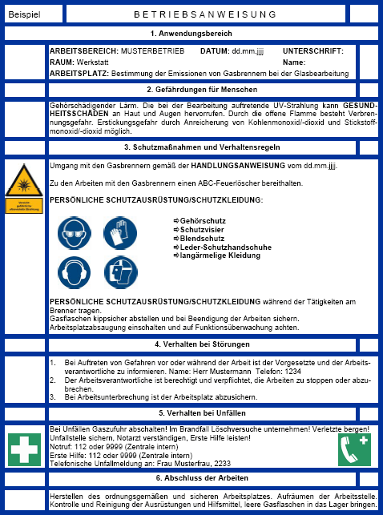

Im Anwendungsbereich einer Betriebsanweisung wird festgelegt, vor welcher Einwirkung ein Schutz erreicht werden soll. Beispiel: "Schutz gegen UV-Strahlung – Arbeitsplätze mit UV-Strahlern". Es wird ebenso dokumentiert, wo sich der Arbeitsbereich/Arbeitsplatz befindet.
Es wird beschrieben, welche Gesundheitsschäden durch inkohärente optische Strahlung (auch durch deren indirekte Auswirkungen) und andere Gefährdungsfaktoren auftreten können. Dabei wird auch Bezug auf die Zielorgane genommen.
In diesem Abschnitt wird festgelegt, welche Handlungsweisen durchzuführen sind. Dabei kann auch auf eine Handlungsanleitung verwiesen werden, die als Anhang an die Betriebsanweisung formuliert wird. Des Weiteren wird auf Schutzmaßnahmen eingegangen, sowie auf gegebenenfalls erforderliche regelmäßige Überwachung von Parametern (z. B. Raumluft). Beispiele für Punkte, die in diesem Abschnitt angegeben werden können:
In diesem Abschnitt wird angegeben, wie man sich bei Störungen verhalten muss. Es wird dabei eine einzuhaltende Reihenfolge festgelegt. Beispiel:
Es wird beschrieben, welche Maßnahmen bei Unfällen getroffen werden müssen. Dabei wird auf sofortige Gefahrenminderung (z. B. Schließen einer Gasversorgung), Absicherung des Arbeitsbereiches sowie insbesondere auf die Meldekette eingegangen. Beispiel:
Bei Unfällen Anlage abschalten! Verletzte retten!
Unfallstelle sichern, Notarzt verständigen, Erste Hilfe!
Notruf: 112 oder ...
Erste Hilfe: 112 oder ...
Telefonische Unfallmeldung an: ...
Hier wird festgelegt, wie der Arbeitsplatz nach Beendigung der Arbeiten gesichert und verlassen werden muss. Dies beinhaltet z. B. das Herstellen des ordnungsgemäßen und sicheren Arbeitsplatzes, Aufräumen der Arbeitsstelle, Kontrolle und Reinigung der Ausrüstungen und Hilfsmittel.
Beispiel einer umfassenden Betriebsanweisung für die Glasbearbeitung mit Gasbrennern
